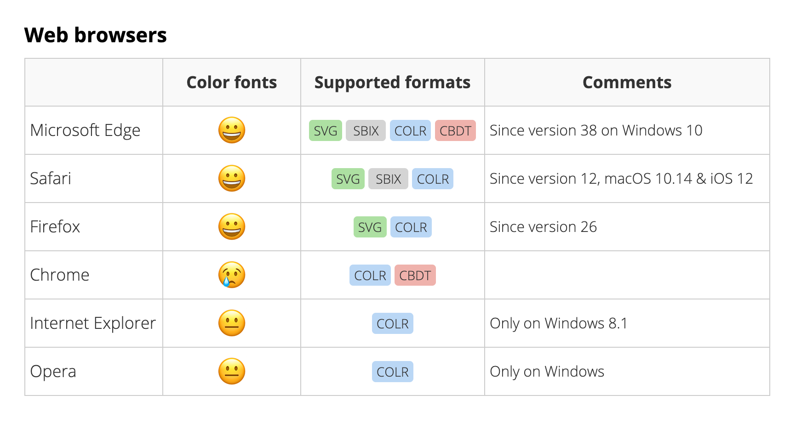

These fonts can be huge.
A color font file is generally larger than a regular font file, and a lot more when the font embeds high-resolution bitmap characters. Whereas fonts usually weigh tens to a few hundred kilobytes, color vector fonts can reach hundreds of kilobytes to a couple megabytes depending on their visual complexity. Color bitmap fonts may range from a few megabytes to tens of megabytes, and sizes increase when multiple color font formats are embedded in a single file.Support in different browsers.
You’ll have to serve up an individual font file for each technique. Today this’d mean two font files, one for IE11 on Windows 8.1 and newer, and one for Firefox. I don’t think there’s a way to do feature testing for this, so you’d either have to sniff user agent strings, or serve them both to each visitor. Theoretically the proposals could live together inside one file, but I haven’t found any tools to do this with yet. Which version the browser would choose when it’d support them all remains to be seen.
Colors are determined by the font maker.
The color scheme is hardcoded in the font. This might not be a big problem for emoji, but if you’re going to use a fancy colored font, you want it to fit the design and style of the rest of your website. One might see how Microsoft’s solution could perhaps be addressed from CSS (maybe with an extension to CSS like color-layer1: red;) — but that’s assuming the font shares one palette. If each character has its own set of colors, like emoji, this is going to get messy fast. And changing color of PNGs or SVGs seems nearly impossible. Some color fonts’ designers provide customized color choices or predesigned alternatives.Render performance.
Getting that font to show up might be CPU intensive, especially on mobile. Implementations will surely be optimized over time, but for now, this Mozilla test page seems to be very slow on my PC.Accessibility.
Color can spice up your design, and it can add meaning to text or UI elements — but only when done well. Multicolor fonts can reduce the legibility of text, especially when the human using your website is color blind. There is currently no way to force the multicolor font to use its non-color fallback.